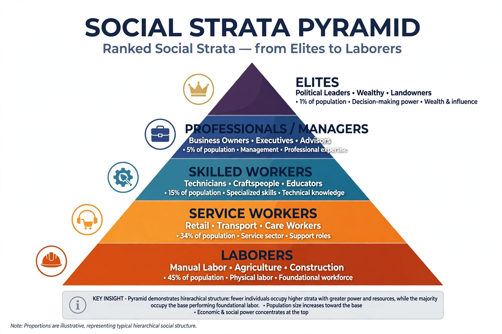

| Social stratification | |
| Field | Sociology |
|---|---|
| Core bases | Wealth, income, occupation, education, power, prestige |
| Systems | Class, caste, estate, slavery |
| Key theorists | Karl Marx, Max Weber, Émile Durkheim, Pierre Bourdieu |

Social stratification refers to the ranking of individuals and groups in a society into hierarchical layers (strata) according to unequal access to resources, power, and prestige. It is a central topic in sociology, because stratification shapes life chances — health, education, income, and longevity — for everyone in a society.
Sociologists distinguish four major systems. Slavery is an extreme system in which some people are owned as property. Caste systems, exemplified by traditional India, assign rank at birth with little mobility and strong endogamy. Estate systems, typical of feudal Europe, divided society into legally defined orders (clergy, nobility, commoners). Class systems, characteristic of modern industrial societies, are more open: position depends partly on achieved characteristics such as education and occupation, though ascribed factors and inherited wealth remain powerful.
Karl Marx explained stratification through relations to the means of production: the bourgeoisie owns them, the proletariat sells its labor. Max Weber offered a multidimensional model of class (market position), status (prestige), and party (organized power). Functionalists such as Kingsley Davis and Wilbert Moore argued that stratification is inevitable because societies must motivate talented people to fill important roles — a view criticized for justifying inequality. Pierre Bourdieu added cultural and social capital to economic capital, showing how advantages reproduce across generations through schooling and taste.
Social mobility — movement between strata — may be intragenerational or intergenerational, and is a key measure of openness. Research on recent decades documents rising income and wealth inequality in many countries, slowing absolute mobility, and persistent stratification by gender, race, and ethnicity layered onto class. Global stratification extends the analysis to inequalities between nations, studied through dependency and world-systems theory.